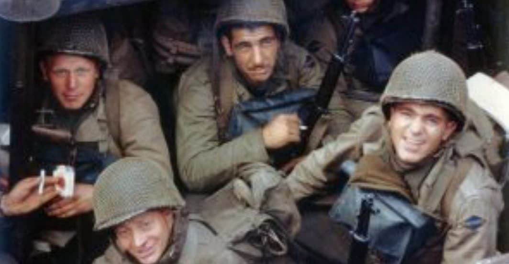
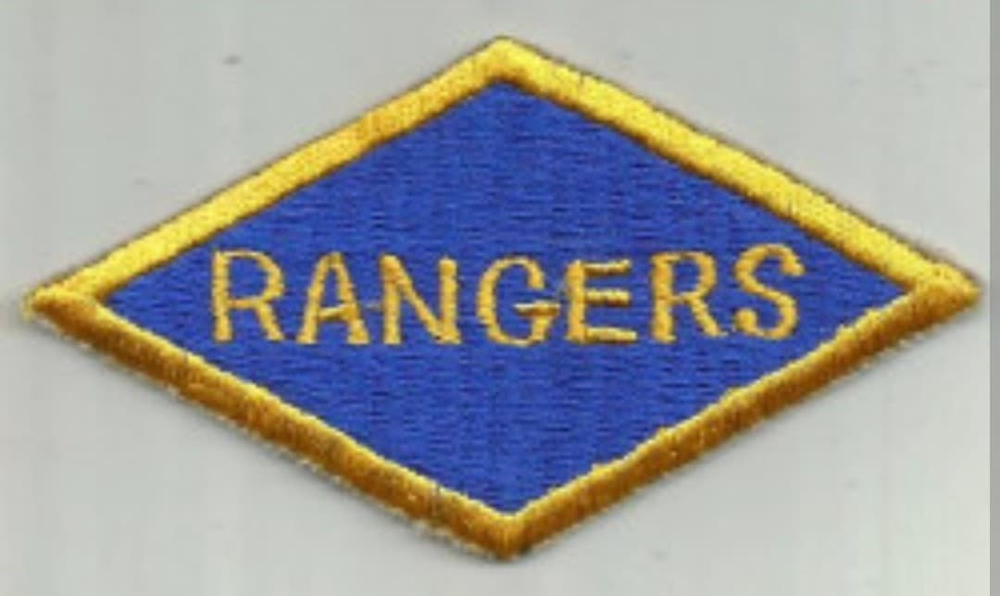
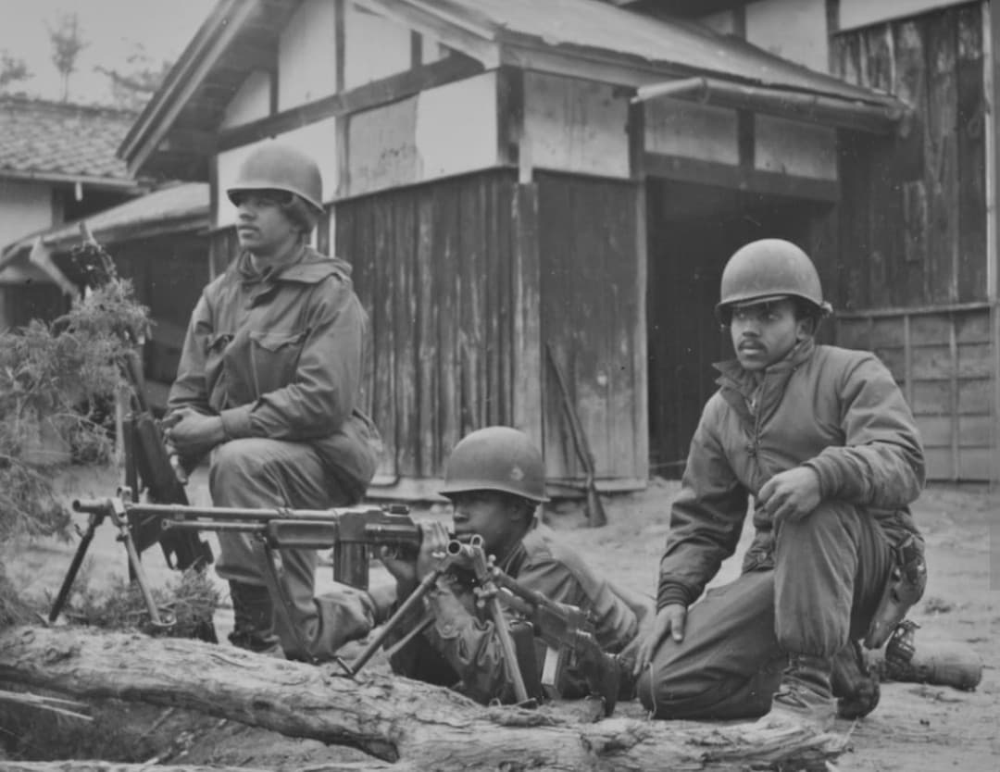

Les troupes d'élite de choc américaines : des falaises de la Pointe du Hoc aux opérations commando en Europe

Les US Army Rangers constituent la force d'infanterie légère d'élite et de commandos de l'armée américaine. Formés sur le modèle des Commandos britanniques au début du conflit, les bataillons de Rangers ont été forgés pour mener les missions les plus périlleuses : assauts amphibies de vive force, infiltrations derrière les lignes ennemies et neutralisation de points stratégiques fortifiés.
De leurs premiers engagements aux côtés des Britanniques jusqu'aux falaises de Normandie et aux combats en Europe, leur devise historique, « Rangers Lead The Way » (« Les Rangers ouvrent la voie »), incarne leur esprit d'audace et de sacrifice.
Le premier bataillon de Rangers est officiellement activé en juin 1942 en Irlande du Nord sous le commandement du capitaine (puis colonel) **William O. Darby**. Inspirés par les commandos de l'aumônier et des forces spéciales britanniques, les volontaires subissent un entraînement physique et tactique d'une extrême rigueur.
Plusieurs bataillons (notamment les 1er, 2e, 5e et plus tard le 6e) sont créés pour opérer à la fois sur le théâtre européen et dans le Pacifique, chacun se distinguant par son béret ou son insigne distinctif arborant le losange des Rangers.

Le fait d'armes le plus célèbre des Rangers a lieu le **6 juin 1944** lors du débarquement en Normandie. Le 2e bataillon de Rangers, commandé par le lieutenant-colonel **James E. Rudder**, a pour mission périlleuse d'escalader les falaises verticales de la **Pointe du Hoc** sous le feu ennemi pour neutraliser une batterie d'artillerie lourde allemande menaçant les plages d'Utah et d'Omaha.
Malgré des tirs nourris et un isolement de plusieurs jours, les Rangers remplissent leur mission au prix de lourdes pertes, illustrant le summum du courage au combat. Au même moment, d'autres compagnies ouvrent des brèches cruciales sur Omaha Beach.

Après la Normandie, les bataillons de Rangers continuent de s'illustrer à travers la campagne de France, la dure bataille de Hürtgen et les offensives finales en Allemagne, menant des missions de reconnaissance et de rupture de lignes.
Dissous après la fin de la guerre, les Rangers laisseront une empreinte indélébile dans l'histoire militaire, posant les fondations des forces spéciales modernes de l'US Army.
Page du Musée HOP WW2 – Section Unités & Divisions